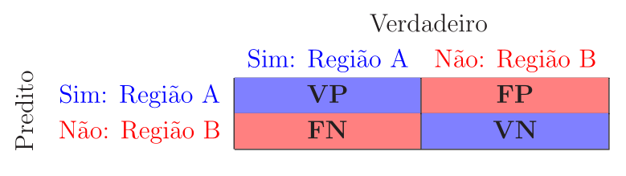
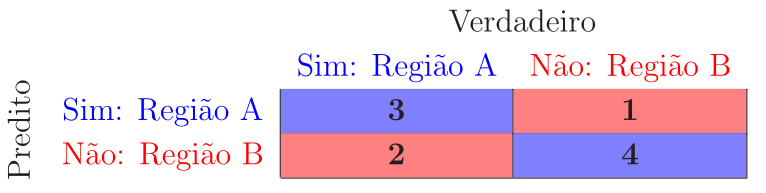

Medidas de desempenho
Avaliar o modelo é essencial em aprendizado de máquina. Seu modelo pode fornecer resultados satisfatórios quando avaliado por uma determinada métrica, mas ruins quando avaliado por outra. Em problemas de classificação, a precisão geralmente é usada para medir o desempenho do modelo, porém essa métrica não é suficiente. A seguir, vamos abordar diferentes tipos de métricas de avaliação. As métricas estão divididas de acordo com o tipo de problema.
Problemas de classificação
Vamos voltar ao problema das meias-luas, em que se deseja classificar um determinado ponto como pertencente à Região A ou à Região B. Assim, deve-se responder à pergunta: Dado um determinado ponto, ele pertence à Região A? Há duas possíveis respostas: Sim ou Não, sendo que quando ocorre a resposta negativa, subentende-se que o ponto pertence à Região B. Neste caso, os elementos relevantes são os da Região A. Por exemplo, quando se deseja detectar câncer de mama utilizando imagens de mamografia, os exames classificados como “presença de câncer”, ou seja, como positivos, são os elementos relevantes do problema. Os tipos de erros de classificação estão mostrados na Tabela 1.
| Rótulo verdadeiro | Rótulo predito | Tipo de Erro |
|---|---|---|
| Sim | Sim | Verdadeiro Positivo (VP) |
| Não | Não | Verdadeiro Negativo (VN) |
| Não | Sim | Falso Positivo (FP) |
| Sim | Não | Falso Negativo (FN) |
Na Figura 1, é mostrado um diagrama dos erros de classificação. Os elementos classificados como positivos (elementos recuperados) são os que se encontram no interior da circunferência e são divididos em dois grupos: verdadeiros positivos e falsos positivos. Os elementos classificados como negativos estão fora da circunferência e também são divididos em dois grupos: falsos negativos e verdadeiros negativos.
Matriz de confusão
A matriz de confusão é uma tabela que contém o resumo dos resultados de um problema de classificação. Os números de predições corretas e incorretas são resumidos com valores de contagem e divididos por cada classe. Ela mostra as maneiras pelas quais seu modelo de classificação fica confuso quando faz predições, fornecendo informações sobre tipos de erros cometidos pelo classificador.
Considerando o problema das meias-luas e os tipos de erro de classificação descritos anteriormente a matriz de confusão é dada por

Para exemplificar, considere o exemplo de classificação da Tabela 2, em que há 10 predições, sendo \(\text{VP}=3\), \(\text{VN}=4\), \(\text{FP}=1\) e \(\text{FN}=2\).
| Rótulo Correto | S | N | N | S | S | N | S | S | N | N |
| Rótulo Predito | N | N | N | S | S | N | N | S | N | S |
| Tipo de erro | FN | VN | VN | VP | VP | VN | FN | VP | VN | FP |
A matriz de confusão do exemplo da Tabela 2 é dada por

Para um bom classificador a matriz de confusão deve ter valores na diagonal principal muito maiores que os valores da antidiagonal, que idealmente deveriam ser iguais a zero.
Vale notar que, apesar desta ser a definição mais usual da matriz de confusão, essa definição pode variar em algumas referências ou em algumas bibliotecas de software, como é o caso do scikit-learn, que define a matriz de confusão como a transposta da matriz aqui apresentada, ou seja, com as linhas usadas para representar os valores verdadeiros e as colunas para representar os valores preditos.
Acurácia e taxa de erro
Uma vez determinados os erros de classificação, as seguintes métricas podem ser calculadas:
\[\begin{equation*} \fbox{$\displaystyle \text{Acurácia}=\frac{\# \text{predições corretas}}{\# \text{predições totais}}=\frac{\text{VP}+\text{VN}}{\text{VP}+\text{VN}+\text{FP}+\text{FN}} $} \end{equation*}\]
e
\[\begin{equation*} \fbox{$\displaystyle \text{Taxa de erro}=\frac{\# \text{predições incorretas}}{\# \text{predições totais}}=\frac{\text{FP}+\text{FN}}{\text{VP}+\text{VN}+\text{FP}+\text{FN}}=1-\text{Acurácia}. $} \end{equation*}\]
Considerando o exemplo de classificação da Tabela 2, temos
\[ \text{Acurácia}=\frac{\text{VP}+\text{VN}}{\text{VP}+\text{VN}+\text{FP}+\text{FN}}=\frac{3+4}{10}=0,7=70\% \]
e
\[ \text{Taxa de erro}=1-\text{Acurácia}=1-0,7=0,3=30\%. \]
A acurácia não é uma métrica adequada para analisar a classificação quando as classes estão desbalanceadas. Suponha, por exemplo, que \(97\%\) dos exemplos de treinamento sejam da Região B e apenas \(3\%\) da Região A. Se o modelo consegue predizer apenas os pontos da Região B, a acurácia será de \(97\%\) e nenhum ponto da Região A será detectado. Portanto, o modelo parece ter um ótimo desempenho com base na acurácia, mas falha ao detectar pontos da Região A.
Precisão, Sensibilidade e \(F_1\)-score
Voltando à Figura 1, considerando que os elementos relevantes são os pontos das Região A, a precisão mede a fração dos elementos relevantes entre os elementos recuperados, ou seja,
\[\begin{equation*} \fbox{$\displaystyle \text{Precisão}=\frac{\# \text{amostras positivas preditas corretamente}}{\# \text{todas as amostras preditas como positivas}}=\frac{\text{VP}}{\text{VP}+\text{FP}}. $} \end{equation*}\]
A precisão é uma medida que nos diz qual é a proporção dos pontos que foram classificados como pertencentes à Região A que de fato são da Região A.
Em contrapartida, a sensibilidade, também conhecida como taxa de verdadeiros positivos (True Positive Rate - TPR) ou revocação (recall), calcula a fração dos elementos relevantes que foram recuperados, ou seja,
\[\begin{equation*} \fbox{$\displaystyle \text{Sensibilidade}=\frac{\# \text{amostras positivas preditas corretamente}}{\# \text{todas as amostras com rótulos positivos}}=\frac{\text{VP}}{\text{VP}+\text{FN}}. $} \end{equation*}\]
A sensibilidade é uma medida que nos diz qual é a proporção dos pontos que de fato são da Região A que foram classificados como pertencentes a essa região.
Usando o diagrama da Figura 1, as métricas acima estão ilustradas na Figura 2.
A sensibilidade fornece informação sobre o desempenho do classificador com relação aos falsos negativos, enquanto a precisão fornece informação sobre seu desempenho em relação aos falsos positivos. Dessa forma, se desejamos minimizar os falsos negativos, a sensibilidade deve ser o mais próxima possível de 100% sem que a precisão seja muito ruim. Em contrapartida, se desejamos minimizar os falsos positivos, deve-se fazer a precisão tão próxima de 100% quanto possível.
Vale notar que existe um compromisso entre o desempenho em termos de precisão e sensibilidade. Em geral, quando busca-se aumentar a precisão, diminuindo o número de falsos positivos, diminui-se sensibilidade, pois o número de falsos negativos aumenta e vice-versa. Dependendo do problema, pode ser mais interessante priorizar uma ou outra métrica, alterando-se o limiar utilizado para classificar um exemplo positivo. Um classificador com alta precisão tende a deixar alguns exemplos de fora (falsos negativos) mas aqueles classificados como positivo tem uma alta qualidade (poucos falsos positivos). Já um classificador com uma sensibilidade alta, deixa poucos exemplos de fora (falsos negativos) mas aqueles classificados como positivo não tem tanta qualidade (mais falsos positivos).
Uma métrica que combina a precisão e a sensibilidade é a \(F_1\textit{-score}\) definida como a média harmônica dessas métricas, isto é,
\[ F_1\textit{-score}=2\frac{\text{Precisão}\times\text{Sensibilidade}}{\text{Precisão}+\text{Sensibilidade}}. \]
A média harmônica é uma espécie de média quando a precisão e a sensibilidade são iguais. Mas quando elas são diferentes, essa métrica fica mais próxima do menor valor em comparação com o maior. Portanto, se a precisão ou sensibilidade for muito pequena, o \(F_1\textit{-score}\) levanta uma bandeira e fica mais próximo do menor valor, dando ao modelo uma pontuação apropriada em vez de apenas uma simples média aritmética.
No exemplo da Tabela 2, temos
\[ \text{Precisão}=\frac{\text{VP}}{\text{VP}+\text{FP}}=\frac{3}{3+1}=0,75=75\%, \]
\[ \text{Sensibilidade}=\frac{\text{VP}}{\text{VP}+\text{FN}}=\frac{3}{3+2}=0,6=60\%, \]
e
\[ F_1\textit{-score}=2\frac{0,75\times 0,60}{0,75+0,60}=0,6667=66,67\%. \]
Na literatura, existem outras medidas do tipo \(F\) que envolvem a precisão e sensibilidade, mas a \(F_1\textit{-score}\) é a mais utilizada.
Especificidade e taxa de falsos positivos
A especificidade, em contraste à sensibilidade, é uma medida que fornece a proporção de pontos que não pertencem à Região A e que foram previstos pelo modelo como não pertencentes à essa região. Considera-se então a razão entre o número de pontos classificados corretamente como não pertencentes à Região A, ou seja, os pontos que são VN, e o número de pontos que de fato não pertencem à Região~A, ou seja, os pontos que são FP e VN. Dessa forma, define-se essa métrica como
\[\begin{equation*} \fbox{$\displaystyle \text{Especificidade}=\frac{\# \text{amostras negativas preditas corretamente}}{\# \text{todas as amostras preditas com rótulos negativos}}=\frac{\text{VN}}{\text{VN}+\text{FP}}. $} \end{equation*}\]
Usando o diagrama da Figura 1, a especificidade está ilustrada na Figura 3.
Também é comum definir a taxa de falsos positivos (False Positive Rate - FPR), ou seja,
\[\begin{equation*} \fbox{$\displaystyle \text{FPR}=\frac{\text{FP}}{\text{VN}+\text{FP}}=1-\text{Especificidade}. $} \end{equation*}\]
Essa taxa fornece a proporção da classe negativa (pontos da Região B no nosso exemplo), que foi classificada incorretamente. Uma FPR baixa é desejável uma vez que se deseja classificar corretamente os elementos da classe negativa.
No exemplo da Tabela 2, temos
\[ \text{Especificidade}=\frac{\text{VN}}{\text{VN}+\text{FP}}=\frac{4}{4+1}=0,8=80\%. \]
Coeficiente de correlação de Matthew
Para classificação binária, uma métrica pouco utilizada na prática, mas muito interessante é o coeficiente de correlação de Matthew (Matthews Correlation Coefficient - MCC). Para obter essa métrica, trate a classe verdadeira e a classe prevista como duas variáveis aleatórias binárias e calcule seu coeficiente de correlação. Quanto maior a correlação entre os valores verdadeiros e preditos, melhor a predição. Esse coeficiente de correlação é chamado de MCC quando aplicado a classificadores e é definido como
\[\begin{equation*} \fbox{$\displaystyle \text{MCC}=\frac{\text{VP}\times\text{VN}-\text{FP}\times\text{FN}}{\sqrt{(\text{VP}+\text{FP})(\text{VP}+\text{FN})(\text{VN}+\text{FP})(\text{VN}+\text{FN})}}. $} \end{equation*}\]
Algumas propriedades interessantes dessa métrica podem ser derivadas de sua definição: quando o classificador é perfeito (\(\text{FP} = \text{FN} = 0\)) o valor de MCC é \(1\), indicando correlação positiva perfeita. Em contrapartida, quando o classificador sempre classifica mal (\(\text{VP} = \text{VN} = 0\)), obtemos um valor de \(-1\), representando uma correlação negativa perfeita (neste caso, você pode simplesmente reverter o resultado do classificador para obter o classificador ideal). O valor do MCC está sempre entre \(-1\) e \(1\), com \(0\) significando que o classificador não é melhor do que um lançamento aleatório de uma moeda honesta. O MCC também é perfeitamente simétrico, portanto, nenhuma classe é mais importante que a outra. Por fim, o MCC leva em conta os quatro valores da matriz de confusão, e um valor alto (próximo de 1) significa que ambas as classes são bem preditas, mesmo que uma classe esteja sub (ou super) representada.
No exemplo da Tabela 2, temos
\[ \text{MCC}= \frac{3\times4-1\times2}{\sqrt{(3+1)(3+2)(4+1)(4+2)}}=\frac{10}{\sqrt{600}}=0,408. \]
Área sob a curva ROC
No problema das meias-luas, adotamos o limiar igual a 0. Ou seja, quando a saída do classificador é maior ou igual a zero, o ponto é classificado como pertencente à Região A e quando é menor que zero como pertencente à Região B. Esse limiar é razoável neste caso, uma vez que adotamos \(d\in \{-1, +1\}\) como sinal desejado. No entanto, suponha que a saída de um determinado classificador treinado para este problema siga duas distribuições gaussianas com variância unitária, mas com médias diferentes: uma igual \(-4\) e outra igual a \(1,5\), como mostrado na Figura 4. A gaussiana com média negativa corresponde aos pontos que devem ser classificados como pertencentes à Região B. Enquanto a gaussiana com média positiva corresponde aos pontos que devem ser classificados como pertencentes à Região A. Neste caso, para minimizar o erro de classificação, o limiar deve ser igual a \(-1,25\) e não \(0\). O valor do limiar influencia nas medidas de desempenho do classificador. Neste exemplo, qualquer outro limiar diferente de \(-1,25\) levará a um maior erro de classificação. Na escolha do limiar, devem ser feitos testes para cada valor, ou seja, pode-se gerar a matriz de confusão e comparar as métricas discutidas até agora. No entanto, o melhor a se fazer é considerar a área sob a curva ROC como veremos a seguir.
Dado um limiar, a curva ROC (Receiver Operator Characteristic) é um gráfico da taxa de verdadeiros positivos (sensibilidade) em função da taxa de falsos positivos (\(\text{FPR}=1-\text{Especificidade}\)). A área sob essa curva (area under the curve - AUC) é uma medida da habilidade do classificador de distinguir entre as classes e é usada frequentemente como métrica. Quanto maior a AUC, melhor o desempenho do classificador. Na Figura 5, são mostrados exemplos de curvas ROC com três valores distintos de AUC: \(1\), \(0,\!5\) e \(0,\!8\). As áreas sob as curvas ROC estão pintadas de amarelo. Quando \(\text{AUC}=1\) (Figura 5 (a)), o classificador é capaz de distinguir perfeitamente os pontos da Região A dos pontos da Região B. Se \(\text{AUC}=0\), o modelo classifica todos os pontos da Região A como pertencentes a Região B e vice-versa. Quando \(\text{AUC}=0,5\) (Figura 5 (b)), o classificador não é capaz de distinguir entre as classes: é como se uma moeda fosse lançada para gerar a classificação. Por fim, para \(0,\!5 < \text{AUC}< 1\) (Figura 5 (c)), há uma grande chance de que o classificador seja capaz de distinguir as classes. Isso ocorre porque o classificador detecta mais verdadeiros positivos e verdadeiros negativos do que falsos negativos e falsos positivos.
Em uma curva ROC, um valor mais alto do eixo \(x\) indica um maior número de falsos positivos do que de verdadeiros negativos. Enquanto um valor mais alto do eixo \(y\) indica um maior número de verdadeiros positivos do que falsos negativos. Assim, a escolha do limiar deve levar em conta um compromisso entre o número de falsos positivos e falsos negativos.
Problemas de classificação multiclasse
Até agora, quando abordamos as métricas de desempenho, focamos em problemas de classificação binária. No entanto, essas métricas podem ser estendidas para problemas de classificação multiclasse. Um bom tutorial sobre o assunto pode ser encontrado em (Grandini, Bagli, e Visani 2020).
Problemas de regressão
As medidas de desempenho vistas até o momento não servem para problemas de regressão. A seguir vamos abordar três medidas que podem ser usadas para avaliar modelos de regressão.
Erro absoluto médio
O erro absoluto médio (mean absolute error - MAE) é a média do módulo da diferença entre os valores desejados e os valores preditos. Ele fornece uma medida de quão longe as predições estão dos valores verdadeiro, mas não fornece nenhuma ideia da direção do erro, ou seja, se o modelo está subestimando ou superestimando os dados. O erro absoluto médio é calculado como
\[\begin{equation*} \fbox{$\displaystyle {\rm MAE}=\frac{1}{N_\text{teste}}\sum_{n=1}^{N_{\text{teste}}}|d_n-y_n|. $} \end{equation*}\]
Erro quadrático médio
O erro quadrático médio (mean square error - MSE) é semelhante ao erro absoluto médio. A única diferença é que o MSE toma a média do quadrado da diferença entre os valores desejados e os valores preditos. Como se calcula o quadrado do erro, o efeito de erros maiores se torna mais pronunciado do que o de erros menores. O MSE é calculado como
\[\begin{equation*} \fbox{$\displaystyle {\rm MSE}=\frac{1}{N_\text{teste}}\sum_{n=1}^{N_{\text{teste}}}(d_n-y_n)^2. $} \end{equation*}\]
É comum usar também a raiz quadrada do MSE (root mean square error - RMSE) como métrica, ou seja, \[\begin{equation*} \fbox{$\displaystyle {\rm RMSE}=\sqrt{{\rm MSE}}=\sqrt{\frac{1}{N_\text{teste}}\sum_{n=1}^{N_{\text{teste}}}(d_n-y_n)^2}. $} \end{equation*}\]
A vantagem é que tanto essa métrica como o MAE possuem a mesma unidade da variável predita, o que torna sua interpretação mais simples.
\(R^2\)
A métrica \(R^2\) é usada para fins explicativos e fornece uma indicação da qualidade ou ajuste de um conjunto de valores de saída previstos aos valores desejados. Essa métrica é calculada como
\[\begin{equation*} \fbox{$\displaystyle R^2=1-\displaystyle\frac{\displaystyle\sum_{n=1}^{N_{\text{teste}}}(d_n-y_n)^2}{\displaystyle\sum_{n=1}^{N_{\text{teste}}}(\overline{d}-d_n)^2}, $} \end{equation*}\]
em que
\[ \overline{d}=\frac{1}{N_{\text{teste}}}\sum_{n=1}^{N_{\text{teste}}}d_n \]
é a média dos valores desejados do conjunto de teste. Note que o denominador da fração que aparece na definição de \(R^2\) é proporcional à variância dos dados de teste. No melhor caso, os valores preditos são exatamente iguais aos valores desejados, o que leva a \(R^2=1\). Caso o modelo leve a \(y_n=\overline{d}\), \(n=1, 2, \cdots, N_{\text{teste}}\), que é conhecido como modelo base, teremos \(R^2=0\). Modelos cujas predições são piores que as do modelo base podem levar a \(R^2\) negativo.